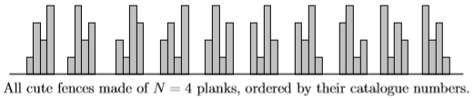

Richard just finished building his new house. Now the only thing the house misses is a cute little wooden fence. He had no idea how to make a wooden fence, so he decided to order one. Somehow he got his hands on the ACME Fence Catalogue 2002, the ultimate resource on cute little wooden fences. After reading its preface he already knew, what makes a little wooden fence cute.
A wooden fence consists of $N$ wooden planks, placed vertically in a row next to each other. A fence looks cute if and only if the following conditions are met:
- The planks have different lengths, namely $1, 2, ..., N$ plank length units.
- Each plank with two neighbors is either larger than each of its neighbors or smaller than each of them. (Note that this makes the top of the fence alternately rise and fall.)
It follows, that we may uniquely describe each cute fence with $N$ planks as a permutation $a_1,...,a_N$ of the numbers $1,...,N$ such that $(∀i;1 < i < N)(a_i −a_{i−1})∗(a_i −a_{i+1}) > 0$ and vice versa, each such permutation describes a cute fence.
It is obvious, that there are many different cute wooden fences made of $N$ planks. To bring some order into their catalogue, the sales manager of ACME decided to order them in the following way: Fence $A$ (represented by the permutation $a_1,...,a_N$) is in the catalogue before fence $B$ (represented by $b_1,...,b_N$) if and only if there exists such $i$, that $(∀j < i)a_j = b_j$ and $(a_i < b_i)$. (Also to decide, which of the two fences is earlier in the catalogue, take their corresponding permutations, find the first place on which they differ and compare the values on this place.) All the cute fences with $N$ planks are numbered (starting from 1) in the order they appear in the catalogue. This number is called their catalogue number.

After carefully examining all the cute little wooden fences, Richard decided to order some of them. For each of them he noted the number of its planks and its catalogue number. Later, as he met his friends, he wanted to show them the fences he ordered, but he lost the catalogue somewhere. The only thing he has got are his notes. Please help him find out, how will his fences look like.
 Comet OJ
Comet OJ